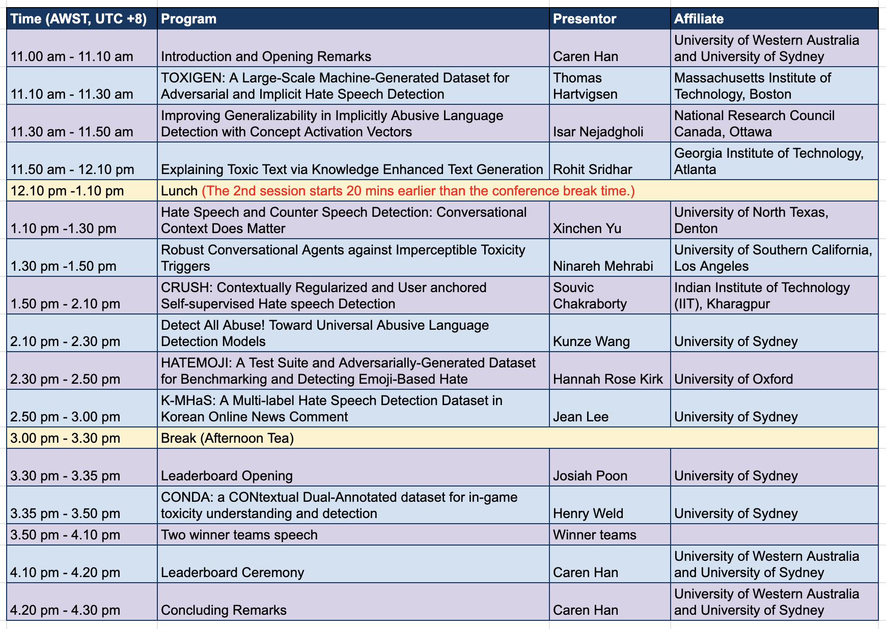

Workshop on Document Intelligence and Understanding (DocIU)
The first Workshop on n (TLD) will be held in conjunction with the 32nd ACM International Conference on Information and Knowledge Management (CIKM 2023) in Birmingham, UK.
- Workshop date & time: 22 October 2023 TBA
- Workshop physical location : TBA
- Hybrid mode : TBA
Overview

Document understanding and information extraction include different tasks to automatically understand a document and extract valuable information. Recently, there has been a rising demand for developing document understanding among different domains, including business, law and medicine, to boost the efficiency of work that is associated with a large number of documents. This workshop aims to bring together researchers in document understanding and image-text processing on diverse document types to boost the automatic document understanding techniques. The workshop consists of
- a series of invited talks by reputed members of the IR and NLP community on document intelligence and understanding from academia related to the topics below;
- a shared task with leaderboard challenges for ; and
- a presentation and ceremony for the leaderboard challenges.
Topics of interest include, but are not limited to:
- Document Information Retrieval
- Document Knowledge Management
- Document Layout Analysis
- Document Parsing
- Document Visual Question Answering
- Document Information Extraction
- Document Image Processing/li>
- Document Analysis Systems
- Document Classification
- Document Representation Modelling
- Multimodal/Multimedia Document Analysis
- Historial Document Analysis
- Document Table Recognition and Analysis
Invited Speakers
The invited speakers from around the world are as follows. (order by program schedule, Name links to a personal webpage or a google scholar.)
Program Schedule
Leaderboard Challenge
To promote the research and practice, a shared task for CONDA Toxicity Detection Challenge will be held in November 2022, and two winning team will be awarded a cash prize. This competition will provide a good testbed for participants to develop better toxicity detection systems.
CONDA: a CONtextual Dual-Annotated dataset for in-game toxicity understanding and detection.
Accepted by ACL-IJCNLP 2021.
Paper | Presentation | Github
Traditional toxicity detection models have focused on the single utterance level without deeper understanding of context. The CONDA dataset is to detect in-game toxic language, enabling joint intent classification and slot filling analysis, which is a core task in Natural Language Understanding (NLU). The dataset consists of 45K utterances from 12K conversations from the chat logs of 1.9K completed the Defense of the Ancients 2 (Dota 2) matches. Dota 2 is a multiplayer online game where teams of five players attempt to destroy their opponents' ancient structure. In this challenge, participants are to implement a model for Joint Slot and Intent Classification and to evaluate their results for toxicity language detection task via leaderboard.
Important Dates
- Leaderboard Challenges Due : 18 August, 2023
- Announcement of Winners: 15 September, 2023
- Camera-ready Abstract Due: 05 September, 2023
- DocIU Workshop: 22 October, 2023
- Note: All deadlines are Anywhere on Earth (UTC - 12) time.
Organising Committee
- Workshop Chair: Dr. Caren Han (The University of Western Australia and The University of Sydney)
- Workshop Chair: Ms. Jean Lee (The University of Sydney)
- Leaderboard Chair: Mr. Kunze Wang (The University of Sydney)
- Student Chair: Mr. Joji Tenges (The University of Sydney)
- Advisory Committee: Dr. Henry Weld (The University of Sydney)
- Advisory Committee: Dr. Josiah Poon (The University of Sydney)
For any queries, send an email to jean.lee@sydney.edu.au